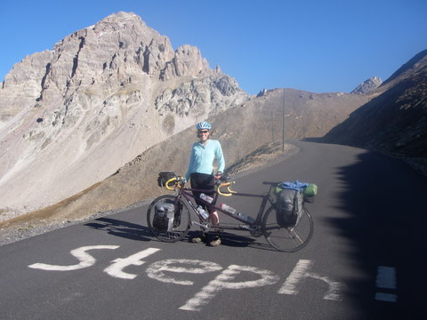

France by Tandem
London to Dover

37 Worfield Street, London: A tandem trip that starts at our front door means no high-stake negotiations with airline personal this time round.

Canterbury Cathedral en route to Dover. A beautiful cathedral in beautiful sunshine.
North East France

The countryside of north east France. Fields of wheat, potatoes, cabbage and sunflowers. It is more rolling than pictured here.

The Cathedral at Reim: Flying buttresses galore!

The Cathedral at Reim II: Getting a clean.

The canal leading to Ligny-en-Barrois. A welcome respite from the yellow roads on the map full of trucks too cheap to take the parallel motorway.

A picturesque tree-lined road leaving Domremy. We've just been to the birthplace of Joan of Arc and are feeling smug that our French was good enough to understand the children's film.

Possibly the best thing about biking in France. We often have breakfast, second breakfast, lunch and sometimes even second lunch at them. A quiche and pain o chocolat is a breakfast for champions.
Approaching Lousanne. The scenery is staring to feel a bit more mountainous.
Lausanne

Crossing Lake Geneva to Evian. Captain Birdseye takes us on a boat ride across the lake. The Alps loom on the other side.
Les Gets
1150m

The first climb up to Les Gets. The gentle gradient lures Stephanie into a false sense of security.
We're following the Route des Grands Alpes, the bumpy route between Lake Geneva and the French Riviera.

The top of the first pass at Les Gets: The mandatory photo. One down, 15 to go.
Col de la Colombiere
1600m

The top of the second pass, the Col de la Colombiere. 1100 m up in 15 km, done, by the end when it was wicked steep, in 50 m bursts. Pretty tough. Stephanie is smiling but inside she has some doubts about whether this is a good idea.

The impressive decent into Le Grand Bornand. What goes up, must come down. Weeee!
Col des Aravis
1498m

Starting the climb to the Col des Aravis. A sunny start to Day 2 on the Route and Climb 1 of 3 of the day.
The top of the Col des Aravis. Well supplied with tourist services and loud-talking tourists.

Decending from the Col des Aravis. Picturesque alpine scenary in glorious sunshine!
Col des Saises
1650m

Ascending towards the Col des Saises. This one is steeper but we are motivated by the Tour de France signs every km counting up the altitude and preparing us for the gradient ahead. The sun is still shining.

The top of the col. All smiles as it is time for lunch.

Rolling down the other side. Croque Monsieurs in our bellies and letting gravity work for us.
Col de Roseland
1968m
We're climbing again. 1250 m to the top.

A break from the uphill gradient. Not only is the lake pretty, it is also flat.

The Col de Roseland - the 3rd summit of the day. 20 km to dinner and it is all downhill!
Decending to Bourg St. Maurice. Is that Stephanie piloting the tandem?!?
Col de l'Iseran
2764m

The mountains are looking bigger as we climb up to Tignes. The sun is back out in its full glory.

The climb continues after lunch. It is hot! hot! hot!

Taking a break in the shade. It's still hot! hot! hot!

En route to the Col d'Iseran: The scenery ain't bad.

It's getting chilly now.

The Col de L'iseran at 2770 m. The tandem at the top of the highest pass in Europe.

The start of a looong downhill.

A pretty place to pause to let the wheel rims cool down.

Lanslebourg in the valley.
Col du Telegraphe
1566m

The start of Day 12. A cool hill fort en route to St Michel de Maurienne.

Relaxing after conquering the climb to the Col de Telegraph. This one we did on one shot!

Proof that we were there.
The weather gods are still smiling on us, as we head on up towards the Col du Galibier.
Col du Galibier
2677m

The start of the climb. It is "melt your face off" hot.
Tis easy to feel small in this landscape.

The road we've traveled.

Look! Someone painted my name in the road to cheer me on. It certainly did help me pedal harder.

Steve's sweat stained gloves. At least someone is working hard.

Near the top. The weather is perfect.

Looking back at from where we've come.
Another one down.
Col de l'Izoard
2360m

Another day, another climb. Today is the first "last big day". A portrait taken by a passer by who was kind enough to send it to us. Thanks!

The sweeping hairpins that carry you to the top.

At the Col. This one is particularly momentous.
The start of the best descent of the trip. It feels like we've left the alpine and entered the desert.

Along a weaving road that hugs the canyon wall. Very cool.

Steve and the gorge on the downhill side of l'Izoard.
Col de Vars
2111m

It may not look it, but we're feeling a bit destroyed at the top of this one. We have an emergency ration of chips and ice cream at the restaurant on the top.
Run sheep dog run!

A beautiful descent in beautiful evening light. All the grumpiness from the uphill slog melts away.
Col de la Cayolle
2326m

"Another big day but not as big as the last one". Where have all the cyclists gone?

The last 2000m+ summit.
The mandatory summit shot.

Traffic problems on the decent.
Col de Valberg
1672m

The top of a short little climb to Valberg. Tonight we will feast here on pizza and Isle Flotant!
Col de la Couillole
1678m

The "big day after the last big day" starts with hiccup over the Col de la Couillole. It felt harder than it should have.

A fantastic hair-pinned descent.
Col Saint Martin
1500m

We tackled this one without stopping. Nice gradient all the way.
Col de Turini
1600m

The penultimate climb. The forest is back. The roads are quiet.
Road closed?!? But we came all this way and it wasn't easy at times!

On the detour and doing some more unexpected climbing. The views at least are inspiring.

The coolest hair-pinned road in the world!
Col de Castillon
707m
The top of the last one! I can smell the sea.
There it is!
Monaco
The first Monaco road sign. It is right around the corner!

The French Riviera. Nice indeed.

Welcome to Monaco!

A seaside boulevard.
A celebratory sundae outside the Monte Carlo Casino. Another tandem adventure done.